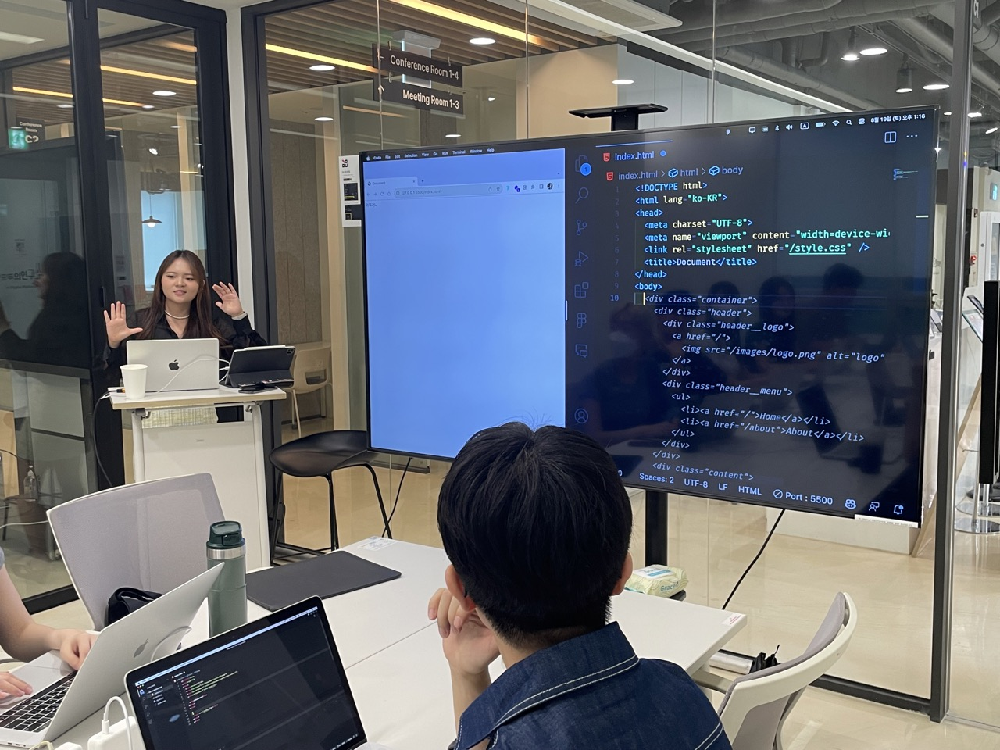
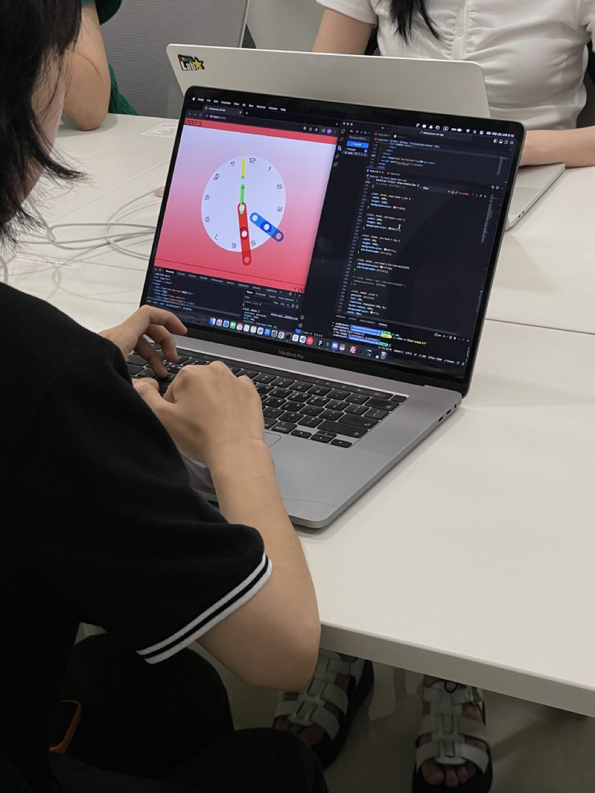
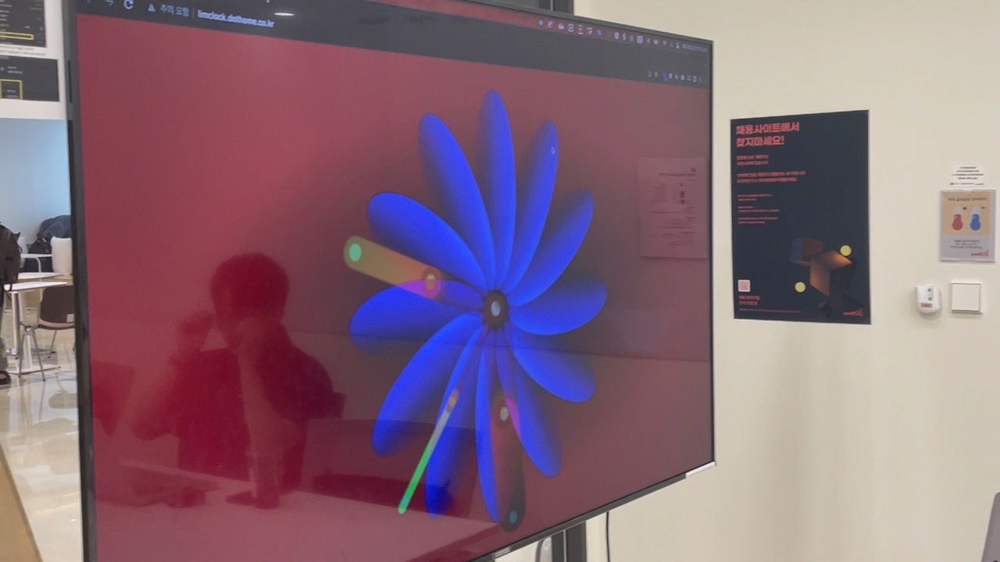
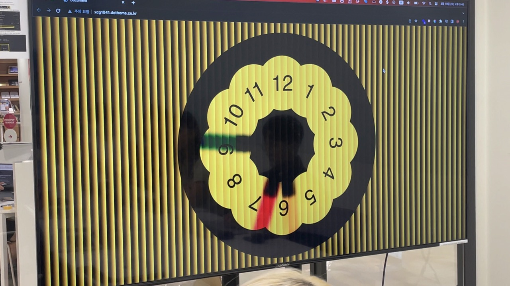

웹으로 실험하는 그래픽 시계
웹에 사용되는 언어인 HTML/CSS/JavaScript를 이용하여 시계를 만들고 효과를 적용하며 그래픽 실험을 진행합니다.




워크숍명 | 웹으로 실험하는 그래픽 시계
진행자 | YYY 고윤서
장소 | 모두의연구소 강남캠퍼스
날짜 | 2023년 8월 19일 (토)
시각 | 13:00 ~ 18:00
참가비용 및 인원 | 무료(10명)
모집방식 및 기간 | 신청서를 통한 선발, ~8.13 23:59
발표 | 2023년 8월 15일 (화)
참여조건 | HTML/CSS/Javascript에 대한 기초 이해